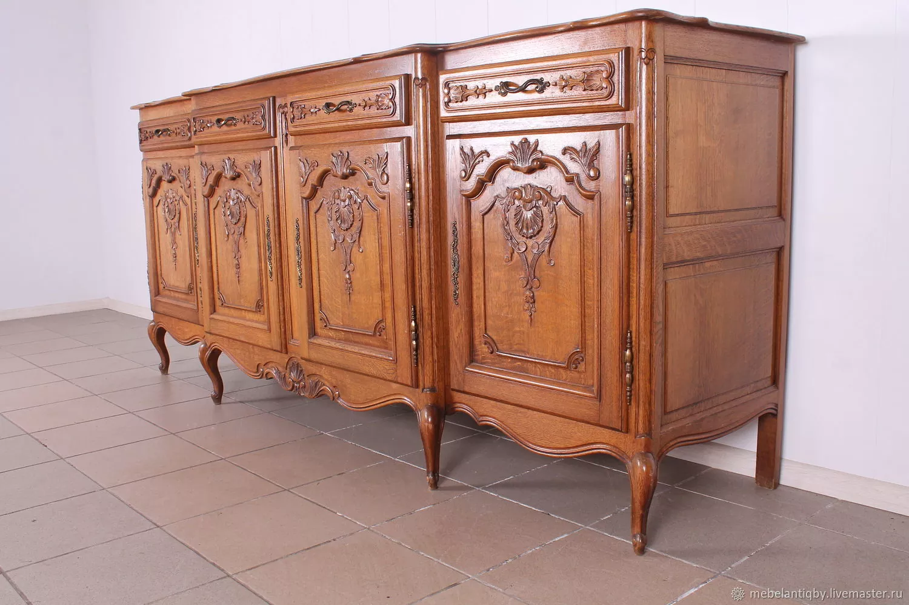
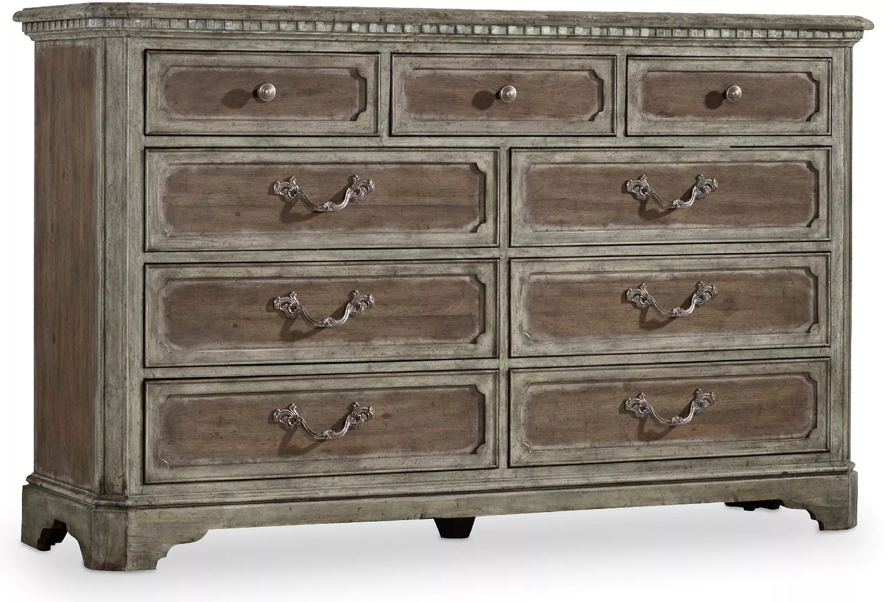
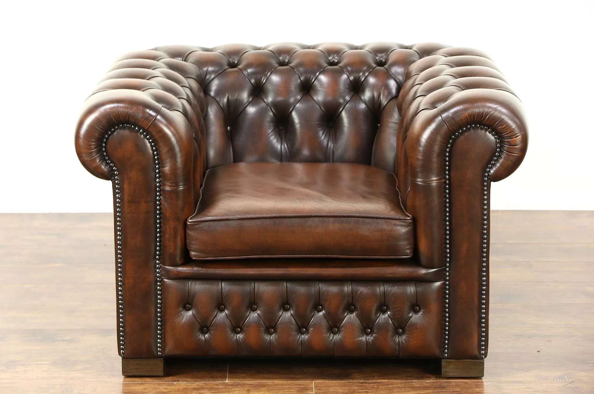
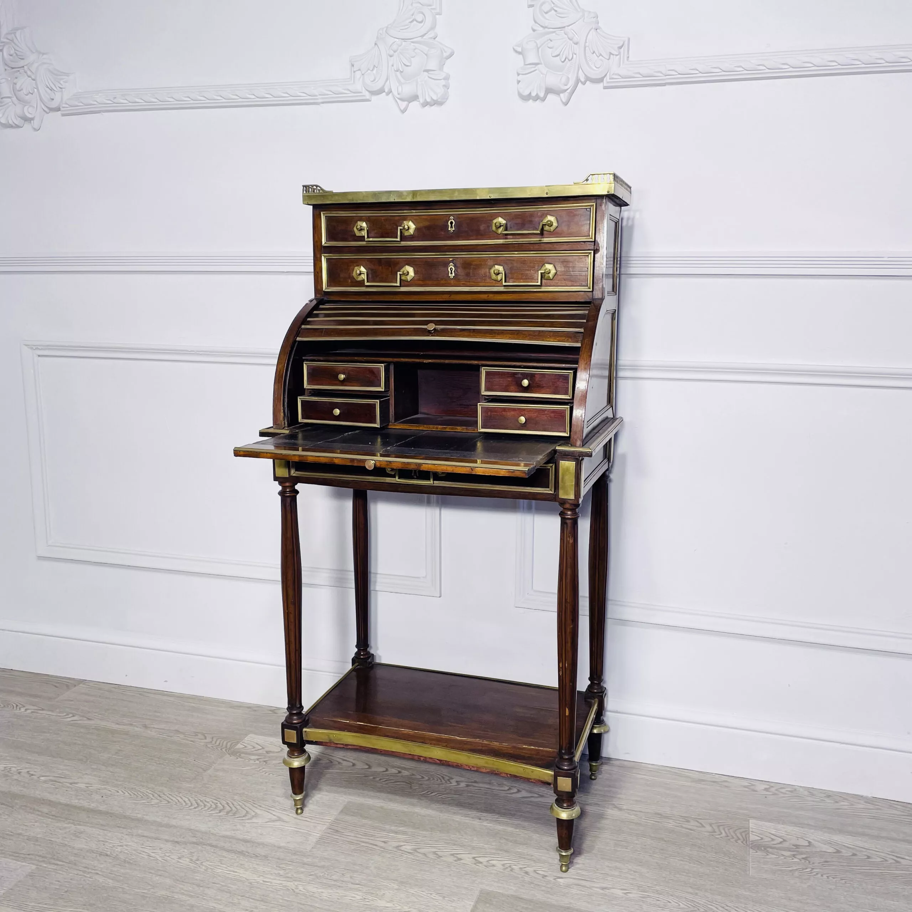

Резные комоды
Деревянные комоды с ручной резьбой, бронзовой фурнитурой и характерной патиной времени.
Натуральная древесина
Ручная работа
Антиквариат, ретро-стиль и мебель, которая рассказывает истории прошлых эпох.
Винтаж (от фр. vintage — "выдержанный") — стиль в дизайне мебели, который черпает вдохновение из прошлого, обычно из периода 1920-1970-х годов. Это не просто старые вещи, а предметы, представляющие ценность благодаря своему возрасту, качеству изготовления и исторической значимости.
"Старая мебель — это как хорошее вино: с возрастом она становится только лучше." — Роберт Топало, коллекционер антиквариата


Деревянные комоды с ручной резьбой, бронзовой фурнитурой и характерной патиной времени.

Классические английские кресла с глубокой стежкой "капитоне", кожаной обивкой и деревянными ножками.

Письменные столы со скрытыми отделениями, секретами и сложной системой хранения.
Предмет считается винтажным, если ему не менее 30 лет, но не более 100 лет (после 100 лет — это уже антиквариат).
Настоящий винтаж имеет признаки ручной работы: неравномерная патина, небольшие неровности, клейма мастеров.
Старая мебель часто сделана из древесины, которая сегодня редко встречается: карельская береза, тис, эбеновое дерево.
Геометрические узоры, экзотические материалы (слоновая кость, перламутр), ступенчатые формы.
Органичные формы, ножки-шпильки, яркие акцентные цвета, функциональность.
Психоделические узоры, оранжевый и коричневый цвета, пластик, модульная мебель.